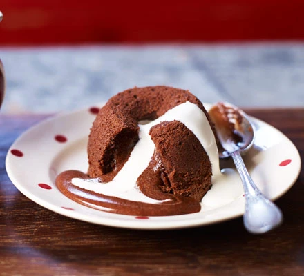

Easy Chocolate Cake

Description
Bake an impressive dinner party dessert with minimum fuss – these chocolate puddings, also known as chocolate
fondant or lava cake, have a lovely gooey centre
Ingredients
- 100g butter, plus extra to grease
- 100g dark chocolate, chopped
- 150g light brown sugar
- 3 large eggs
- 1/2 tsp vanilla extract
- 50g plain flour
- single cream, to serve
steps
- Heat oven to 200C/180C fan/gas 6. Butter 6 dariole moulds or basins well and place on a baking tray.
- Put 100g butter and 100g chopped dark chocolate in a heatproof bowl and
set over a pan of hot water (or
alternatively put in the microwave and melt in
30 second bursts on a low setting) and stir until
smooth.
Set aside to cool slightly for 15 mins.
- Using an electric hand whisk, mix in 150g light brown soft sugar, then 3 large eggs, one at a time, followed
by ½ tsp vanilla extract and finally 50g plain flour. Divide the mixture among the darioles or basins.
- You can now either put the mixture in the fridge, or freezer until you're ready to bake them. Can be cooked
straight from frozen for 16 mins, or bake now for 10-12 mins until the tops are firm to the touch but the
middles still feel squidgy.
- Carefully run a knife around the edge of each pudding, then turn out onto serving plates and serve with
single cream.